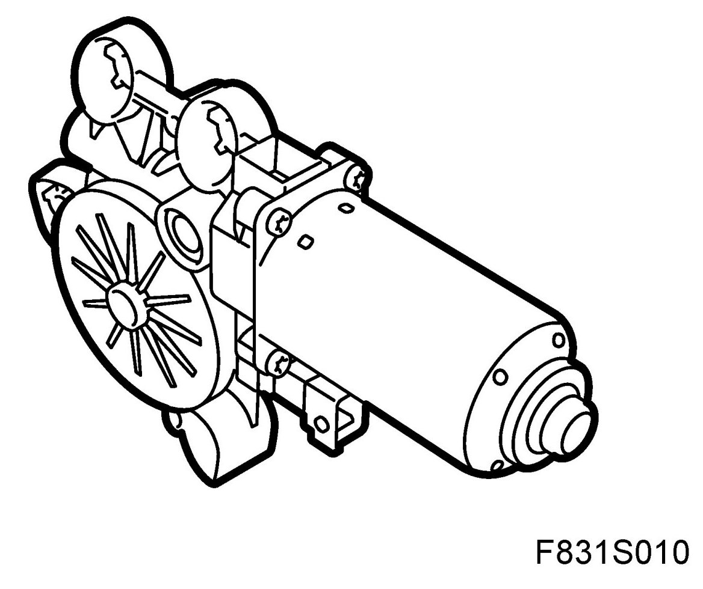
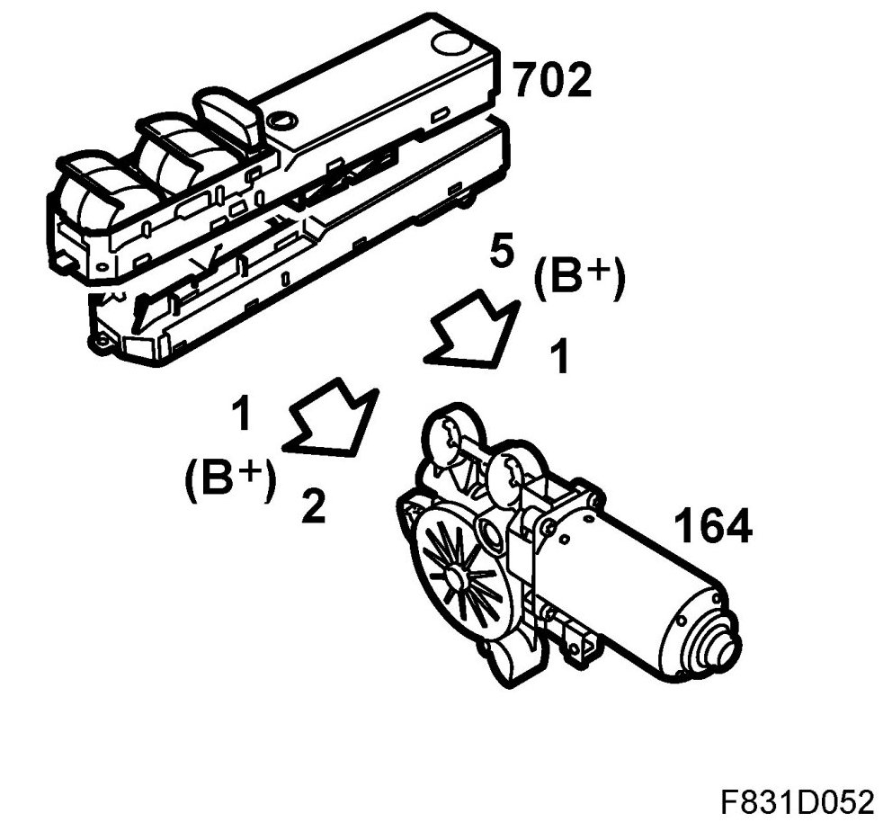
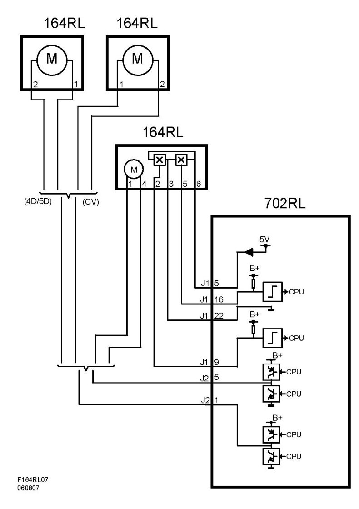
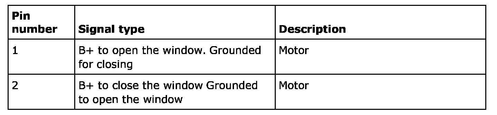
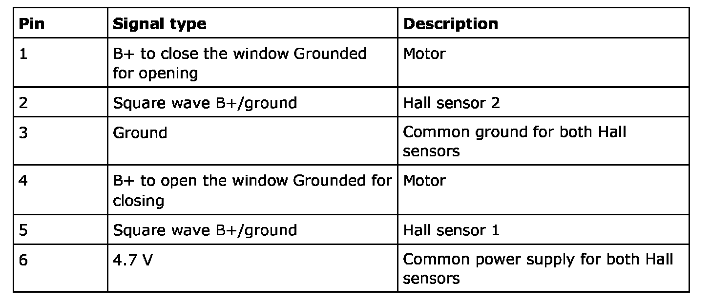

Motor, Electrically Operated Window Lift, Rear, Left-Hand (164RL)
Motor, Electrically Operated Window Lift, Rear, Left-hand (164RL)
Location
Motor, electrically operated window lift, rear, left-hand (164RL)

Main purpose
Raise and lower the door window. Indicate the position of the motor (variants with pinch protection).
Type
The electric window motor contains a 2-pole motor and worm gear. The polarity of the motor is reversed to run it in the opposite direction. In variants with pinch protection, the motor also has 2 Hall sensors that indicate the position of the motor. The Hall sensors are mounted by the motor shaft 90 degrees from each other. The motor shaft has a 2-pole rotor.
Connection
Electric motor
The motor is connected with 2 wires to the door control module (RLDM) in the 4D and to the window lift control module in the CV.
Hall sensors
The sensors are connected by 4 wires to the door control module. The sensors have a common 4.7 V power supply and common ground. 2 signal wires supply each sensor with B+ via an integrated resistor. When the South pole of the magnet passes the sensor, the sensor shorts the B+ feed to ground.
The control module inputs are digital. A voltage greater than 2 V is regarded as "OFF" and lower than 2 V as "ON". The control module calculates the position of the window by counting the number of changes between "ON" and "OFF". The control module will count 2 changes per revolution of the motor from each Hall sensor. Since the sensors are displaced by 90 degrees, the control module will detect a total of 4 changes, displaced by 90 degrees, each revolution.


Motor without pinch protection

Motor with pinch protection
